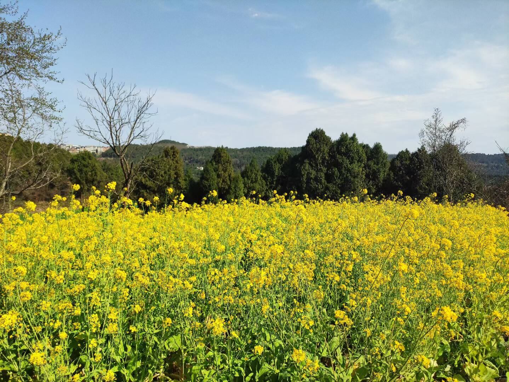

碎碎念合集
合集，持续更新。
4.
3.
上了大学，回家次数也少了起来。虽然在川内上大学，但这学期以来因为各种各样的事情，还没回过家。
小时候总是希望离家远一点，熟悉的地方早就看烦了，后来实现了这个愿望，但是家乡却变得亲切起来了。
起因是今天读到一侧新闻，中储粮油罐车矿物油食用油混装:
早在2005年，《南国早报》就报道过“罐车清洗难防交叉污染，拉完危险化学品后又拉食品”；湖南省衡阳市在2013年也曾发布过“关于严厉打击违法违规运输食用油的通知”。
2017年，有德国实验室检测出老干妈、海天等国产品牌的矿物油超标，违反欧盟和美国的相关标准，然而当时却被《环球时报》视为对中国品牌的敌意打压。
在中储粮首次承认食用油、煤制油等化工类液体油罐车混装后，央视网如此怒斥。然而骂归骂，中储粮的表态只是“引以为戒”，没有道歉，没有召回，没有赔偿，也没有处理责任人。
直到这次曝光后，公众才赫然发现，原来这早已是行业内公开的秘密。混合运输这些油料的司机当然都清楚得很，但他们的自我辩解是：“大货车拉一趟不容易”、“我们开运输的不挣钱”、“清洗一次车厢太贵了”。
半年多前，《新京报》就曾报道“山西一危化车司机清洗槽罐时中毒身亡”，当时微博底下一条留言读来令人悚然：“危险品洗完，再装食用油，不然洗它干嘛？
有一点黑色幽默的感觉，这下众生平等，感觉全国除了特供单位之外，所有的人都吃过煤油之类的矿物油。
看到这则消息我却比其他人要好受一点，为什么呢？
因为我家从不在超市买食用油，我家的油是外公外婆亲手种出来的。小时候在家的时候，每年春天我都能看到盛开的油菜花田，每年夏季我在街上都能闻见榨油的香味。当油菜收获的时候，油菜籽很小，像干燥的细沙一样，非常光滑细腻。

以前我总担忧这样榨油不如工厂批量生产的干净卫生，这下我释然了，亲手榨的油里无论如何不会有煤油存在。这也说明，至少在儿时我吃到的矿物油比别人要少。以前总觉得有机产品是智商税，这一刻我懂得了它的含金量。
我记得一件奇怪的事，在上高中时，我妈以前来学校看我，总抱怨说吃了学校周边的油肠胃不舒服。我当时老爱嘲讽她，认为她比我还矫情。肠胃不舒服的原因当然最有可能是她吃不惯，但今天我突然想到，这其中有没有煤油的作用呢。
有人借这件事说中国人人平等，但事实上是不平等的。中国很大，至少阳光和土地不会缺。
2.Paperclip
自从回形针PaperClip被封禁以后，我再也没有看到过比他们做的更好的中国科普视频了。
回形针是什么？
回形针PaperClip回形针PaperClip曾经是中国大陆的一家科普类自媒体，于2017年成立[3]，其节目信息密度高、动效丰富，擅长可视化讲解[4][5]。回形针PaperClip于2020年爆发的2019冠状病毒病疫情期间发布的视频《关于新冠肺炎的一切》引发了强烈反响，但其因随后发布的视频《中国人的肉蛋奶消费，为什么会影响到巴西热带雨林的存亡？》、早先一些视频中的科学错误、两名前员工的去向和言论而广受争议。2021年7月14日，其哔哩哔哩、微博、知乎、微信公众号、百家号等多个中国大陆网络平台账号被屏蔽，具体原因未知。其YouTube频道亦停止更新，但仍然处于可用状态。
今天看到一篇非常有意思的文章，讲述了回形针团队解散之后的现状
如果能够看到这里，那么看原文也没有问题
链接奉上：https://matters.town/a/a7eq6t1d3tbd
罗枚觉得自己和回形针是挨了锤的牛吗？他不这么认为，“我觉得被锤一种世间规律，”他依旧很平淡地说。
1.
网上闲逛，原本是打算找一找可以实现自指（self-reference)的程序的一些例子,无意中进入到了某一个人的blog。一个事实是，在如今，已经没有人会用blog这种传统的方式记录生活了，腾讯等公司已经彻底包办了这一切。blog的主人从2005年创建了它，从懵懂迷茫的大一写到了而立之年。翻翻它，我看到了一个人所思所想的时间序列，实现了互联网考古。他的文章挺有意思的，从中摘录了部分。
quine [名字源于逻辑学家 Willard van Orman Quine, via Douglas Hofstadter] ，指的是一种运行后生成自身源代码拷贝的程序，也叫self-reproducing programs(自我复制程序)。今天无意中搜到 Ken Thompson 的一篇经典演讲 Reflections on Trusting Trust，好奇心下就小探索了一番。
answers.com 上有一个c语言的例子：
1 | |
运行之后直觉得好奇，为什么它能把自身源代码输出啊？想着可能是某种特技，结果在Linux下，在Win下编译反编译调试比较汇编代码，折腾了半天。到最后看发现实在太繁，还是静心读一下源代码吧，才发现，原来如此的简单：
printf中的第一个参数f，就是格式化字符串，34就是双引号的"ASCII码，10就是换行符的ASCII码，很显然f就是一个用它自身去格式化自身的字符串而已。技术看起来简单，但是要实现完全相同的代码输出，在编排上还真得下一番工夫。
Gtalk上碰见yutian，给他发了过去，还打赌他肯定看不出来运行结果，现在才发现自己幸亏没真赌上。:D，不过人那，还是感情的动物啊，都有一种习惯性思维，看到貌似复杂的东西自己就先限制住思路了，结果他也没看出来，哈哈。
看来，把复杂的事情搞简单，还真不是件容易的事儿。做人，还是简单点好，遇事想那么多干吗，给自己找烦恼。
PS:
谁要对 quine 还感兴趣，这里 有几乎所有语言的一种 quine 实现，这东东好象对写恶意代码很有用啊。
一个事件：2006年5月23日晚六点左右，南京大学附近一餐馆发生凶杀案，凶手为一电子系04级研究生，受害者为与其一个实验室的05级研究生。据悉，二人均为部队推荐到大学读研的强军计划的研究生，目前凶手已经交送军事法庭处理。
相当低调的南大可是碰到了多事之秋，到处是风声鹤唳，人心惶惶，浦口这面也不安全。
联想到马家爵事件，使人想到大学的教育问题。大学究竟应该教会我们什么？只是学术能力吗？
我觉得现在大学教育最缺乏的是对学生个体完整性的教育，到大学以后，离家庭远了，没有人告诉你该怎么样，不该怎么样。辅导员的角色更像一个服务者，而教授们的指责也仅在于教授课本知识。
个体完整性的形成应该是多方面的内容，而大学所教的，只是智力方面的发展。心理和其它方面的能力，只能从交往中获得，而这个获得的方式和效率就完全因人而异了。
相对来说，如果一些老师能在教课之余，给同学们谈论一些做人的道理，能给学生的生涯规划做一些指导，这样的老师就会更受欢迎。因为这样才能感觉到老师是个长者，并且很关心学生。很幸运的是我高中遇到过几位，大学里的就很少了。我最喜欢的两个老师，丁南庆和吴朝阳，就属于这种类型的老师。
韩愈说过：师者，所以传道授业解惑也。真正能理解“道”这个词的意思并身体力行的老师，能有几个呢？
十月十二号十运会开幕，神州六号升空。
身在南京的我们也因此得福多放一天假。
那天早上正在自习，突然收到市委宣传部的信息，号召每个市民共同努力把十运会办成最好的运动会，真好笑，通讯方式先进了，标语宣传也鸟枪换炮了。
寝室的几个人突然对CS又有了很大的兴趣，放假了两天都在宿舍里联网打游戏。唉，真颓废。
结果，两天都没有好好的看书。早上也起不来了，今天愣是在闹钟响了一个小时以后才慢慢的回味过来。
去自习吧，又闹肚子痛，只好回来吃药。郁闷啊！
只能慨叹自己毅力太差。
十运会开了好多天，也没有去看过。现在没有什么新闻能让我感到太大的兴趣，除了IT行业的新闻，别的东西基本上处于不闻不问。
想想去年也是，印尼的海啸我是过了十几天看到捐款的号召才知道有这么一档子事。
神州六号也是在上网的时候顺便浏览到的。
逐渐的对看小说也失去兴趣，现在很少有大块的时间让自己沉浸在虚幻的空间里，顶多不时地去看看杂志。
人啊，真是，变得很快。随着年龄增加和经历的增多，以前的习惯也会慢慢地改变。
昨天买了张贺卡，今天寄出去了，一个朋友的生日。
哥们说：“这都什么年代了，还写贺卡！”
无语。
我把我生命中珍贵的、易失去的东西都称做我的太阳。因为它们，我的生命充满了快乐的光芒，虽然阴霾并不是荡然无存，但是，快乐过，就足够庆幸了。
不可否认的是，我应该非常感激上天赐给了我很多的幸福。人生像一个找寻幸福的过程，前方完全是个未知数，也没有可以估计的期望，渐渐地由孩子而成人而老去，似乎没人有觉得自己的幸福是全世界的最大值。我也一样，人性的本质给了我一颗蒙尘的心，永远不知道满足。常常在想，我到底需要什么呢？
也许这是一个非常沉重的话题，这个月的《萌芽》上有一篇文章说，一个男孩告诉别人，他追求的是爱情，但是在有爱情之前得先打好基础。但他却是清华的学生，已经保送研究生，也不知道他指的打好基础是什么。文章说，等你准备好一切然后去追求你的女孩时，她也许已经在别人的怀抱了。这句话让我想了好久。
我曾经天真的以为我喜欢的女孩和我的想法一样，可以平平淡淡的分享一份稳定的爱情，可是事实证明，像好朋友的个性签名说的，这个世界远不像你想的那样。然后，我渐渐明白了，一个男人还应该有自己的责任，应该有一个能给得起承诺的基础，就开始吝惜自己的感情了。既然给不起别人，就不要期望可以有回报。换用我自称帅哥室友的一句话，可能极端了点，这年头，帅顶个屁用，男人要有钱。
直至现在我也不知道我到底做得对不对。大一的时候日子过得很平淡，由于对数学不怎么感兴趣，心中也有一份期待，学习以外的爱好就是运动运动，看看闲书。我的朋友就说，很羡慕你的，有那么随心的生活。等到军训后的那个暑假，受到打击之后才发现，自己什么也不是，虽然从小功利心就不是那么的强，还是被一种强烈的自卑撞击得体无完肤。就连暑假也过得不顺利，倒霉到能在马路上碰巧撞到一个篮球，而且伤口到开学才长好。大二为了让自己生活中的一块被填补上，便把自己投入到各种活动中去，把本来可以大一就应该体验到的东西尝试了一遍。时间是疗伤很好的工具，在忙碌中渐渐淡忘。虽然不可以完全无动于衷了，可是至少可以做到平静的生活，偶尔会听到一些消息，全当作一个好朋友罢默默的祝福。
整个大学时代已经没有什么好期待的了，我认为我的感情生活在大学已经成了死水一潭，没可能再有什么波澜。为了不让它那么索然无味的过去，也是受了一位学长的鼓动，就打定了决心出国，虽然成绩并不是很理想，但是还是过得去那种，可以试试，况且还有一年多时间。然后在系里做得还行，因为学生工作的缘故也认识了许多朋友，再次恢复了往日那种自信，虽然学习也没什么起色。生活也渐渐地趋于规则化，况且有学校的身处市郊，与世无争的清净，也可以说是安逸了。
无论如何是舍不得的，我也不想回避这一点。但是一切真能像我期待的那样走下去吗？我常常问自己。我不知道，不知道将来，不知道该如何去做。记得好象是柳传志说过，如果不知道下面该做什么，先把手头的事情做好。可是我发现自己居然是那么的幼稚，连现在该怎么做都不知道。在感情方面，我还只是个不谙世事的孩子，把一切看得像童话般简单，可事实把理想一个一个撞得粉碎。现在的我，依然过着原来的生活，依然渴望平平淡淡波澜不惊，只是某些时候加了一些期待，加了一些对未来的憧憬。正如志摩之言：“我将于茫茫人海中访我唯一灵魂之伴侣；得之，我幸；不得，我命，如此而已。”
在百合上看到一篇文章，据说是一个退学的博士生写的。
讲他是如何对清华的教育感到失望的。
一开始我还以为是某种讽刺的文章，写来取笑清华大学的。
没想到看了之后才发现，还真是有这个人。
最巧的是这个人写的一篇叫做《完全用LINUX工作》的文章我还看过，而且还下载下来专门研究过，是不可多得的全面介绍LINUX系统下应用软件的文章。
刚才上CSDN，业界视线版大标题：“清华退学博士王垠：《完全用Linux工作》”。
真是搞不懂，这个年头，噱头太多，什么都能成明星。
王垠自己也说，自己想出名的领域出不了名，胡乱写几个字居然让自己声名雀起，真是莫大的讽刺。
说实话，我很佩服他，敢追求自己想要的。
假如给我一个清华的博士，我绝对不会像他那样毅然而决然地退学的，最起码也会熬到博士学位证。
想想我自己，当初何尝不是像他一样，小的时候对清华有着莫名的崇拜。而且也是那种动手能力很强的人，喜欢琢磨一些电路啦什么的东西。
可是大了以后，就知道学习可不是那样的，我得应付考试，得应付父母的督察。
还记得初中时候踢球，老爸给我说，只要你学习成绩在校前三十名，踢球的事情我们不管你。
学习成绩居然跟我的课余活动自由直接挂钩，现在想想，很讽刺。
其实我是很羡慕那些看起来吊儿郎当的同学的，因为从小的教育就是做一个好学生，没做过什么越轨的事情。心理分析家说人对自己没有体验过或者不能拥有的事情总是很向往，可能也是我羡慕的原因。至今我仍然觉得自己有点可悲，可以说是想象自己是一个胆小怯懦、循规蹈矩、很无能的一个人。
进入大学以后我也一直在思考我学习的意义何在，可是思考的同时我却没有注意学好眼前的东西，也许是对抽象的东西理解不怎么样吧，成绩也不怎么好！而且考试的时候觉得很不可思议，为什么我做作业的时候会做的题考试时总要做得一塌糊涂呢？
直到现在，才发现自己真有些喜欢大学的学习，喜欢数学了。可现在努力还可能有期望的结果吗？我不知道，但是如果放弃努力怕是不可能有结果的。
进一步来说大学的课程合理吗？我也不知道，我就知道我要学好它。至于它有没有用，就只能以后才晓得了。在我的专业课程以外，我学了很多东西。不能担保就有用，只是我感兴趣。不过要是拿来和王垠比的话，恐怕没有他那么深。这也是我一直很困惑的地方，除了专业课之外我确实可以学些别的东西，可却没有一个系统的学习，就注定没有一个更高层次的领悟，那么多的浅尝辄止能堆积起知识的大厦吗？
也许，我在这一两年里还可以做出来点成就，也许我有机会出国深造，但是五年的数学PhD读下来我出来又能干什么？太多的对未来的迷茫。
这也许就是中国孩子的悲哀，从小就是一个一个目标，好小学，好初中，好高中，好大学，然后硕士，博士。但是家长们没有告诉孩子们的是，最重要的是什么？人生真正的目的是什么？
我的好朋友给我说，他之所以选择考T就是因为从小一个个目标，现在却没有了，只好给自己强加上一个。我觉得我在潜意识里确实也有这样的因素，但是还有的是对中国教育的不信任，我想看看别人是怎么教育自己的孩子的。为什么电影里面美国人并不十分在乎自己的什么地位，而那么注重生活的和谐？那是编出来的还是一个社会的意识不同。
中国缺少研究的气氛，缺少自由的意识。大学教育缺乏一个有效的沟通机制，包括师生之间和学生中间。在我的学习中，有好多东西想和别人讨论，但是专业外的东西就找不到别人谈谈，而专业内的又不怎么好意思开口。我们像一台台计算机，只是要记住证明，记住定理，记住算法，而没有去想这个算法可不可能优化，还有没有别的实现方法。不是我没有考虑过，只是当想到一个问题时，你脑子里马上就会有一个成型的算法或证明，或者说你知道要从课本的哪地方找到它。这个时候，你还有没有心思再去想别的，假如再加上好多课业。
在这个环境里面，足够优秀的人还是能做些事情的，比如说这个退学的清华博士，虽然他自己看自己的成就不怎么样，但相对与别的人来说他还是出色的。我现在不可能苛求环境有多好，只想在这样的环境里面尽我的努力去获得一些自身价值的体现，尽管可能衡量标准并不那么科学。
以前可能对应用方面偏重太多，学了一些华而不实的东西，总没有那种脚踏实地的感觉。以后就要专心理论多些了，我觉得自己感兴趣的主要还是和计算机有关的一些东西，比如算法、数据结构啦一些的东西，现在懂的太肤浅了，在大学剩下的时间里，我有必要搞清楚一些。
进入大三以来学习认真许多，而且真的发现当专注于某件事情的时候，就不会有什么乱七八糟的烦心事，心情也安定许多。
也很少干浪费时间的事情了，比如打游戏，上网干吗的。现在开电脑主要就是学英语，看资料。最近就是在翻译前面贴出来的Matlab Functions，太长了，翻译起来不容易，而且专业术语很多，大多是简化的表达，很难准确地看懂。虽然有专门介绍函数的书，但是自己翻译起来才有成就感，不会了自己使用一下，看看到底是什么功能，更容易理解函数的使用，因为不是每个函数你在实际中就能用到的，顺便再学些数学术语，总之对自己是有很大好处的。
我的未来应该在我的手中。
今天晚上考副修第一门，国际结算与融资。不难，有好多老师给的样卷上的题目。又想起来去年VFP的考试，所谓“样卷”，呵呵。
这两天看金融，总有一个感受，“利”字当头。真应了《史记》上的话。
尤其是结算，讲的就是国际贸易中的资金往来，主题就是怎么做到严谨地进行贸易结算和融资，预防和控制可能产生的风险。案例总是谁骗了谁，谁被谁骗。
其实纵观这个世界，不也就是一个“利”字？
世贸部长级会议，开个六天，也没说出个所以然来。场外，反对全球化的人示威游行；场内，各个利益集团之间扯来扯去。发达国家要发展中国家放弃贸易壁垒，发展中国家要发达国家提供更多援助和开放原材料市场。中国也在这场会议上第一次高调起来，但是起的作用也是有限。中国不愿意做发展中国家的领头羊，既与本身的民族意识有关，怕也与和其他发展中国家事实上处于竞争地位脱不了干系。都是以廉价劳动力市场，低附加值产品，加工型工业来挣得国际投资和出口，和中国有利益冲突的有很大一部分也是发展中国家，与竞争对手结盟，对中国也没有太大好处。
首届东亚峰会召开，都注意到了东北亚已经成为会议的核心，主角是日本和中国，小泉和温家宝。中日韩峰会因为小泉政府的不负责任行为被无限期推迟。虽然在镜头前作秀表示友善，小泉也仍然没有改变日本政府对待历史的实际态度，依然是政冷经热。虽然亚洲国家因为日本在亚洲的经济地位现在仍然难以动摇，很难放弃和日本的经济往来，但是不知道日本的强硬态度还能坚持到几时，等到它们意识到整个亚洲的反对态度时候，后悔还晚不晚？东盟眼看着10+3的3抢去了那么多风头，心中自然也是大不情愿，就拉来了印度和澳大利亚、新西兰来作为制衡，试图把东亚峰会的核心集中在东南亚。发展中的印度不能小视，今年的GDP增长速度已经达到了8%以上。俄罗斯也在试图加入。中国想成为一个世界大国，在国际上能有举足轻重的作用，任重而道远。
联想与IBM的整合第二阶段也提前开始了，据联想自称与IBM的整合并没有使它失去客户，反而营业额增长了不少，这一季度的财务报告相当漂亮，新联想正在加速浮出水面。利用奥运会的契机，不知道联想能不能站到领跑位。
民营快递公司纷纷出售，EVD的风云再起，盛大“传奇”的免费运行，国储铜的抛售风波，Google的code jam与Microsoft的code 4 bill、个性化主页与Live.com，三九集团的危机，在现在这个年头，想找到一样东西与利无关，怕是不太容易。
但也总是有一些事情不那么让人觉得功利。尽管有些人是靠着传播感动来获得利益，总比传播谎言的好。南方周末载了一篇文章，关于代课教师的，引起了全国的震动。那些代课教师们拿着一个月40~80块的工资在培养着中国农村的未来。中国西部教育人才的缺口与东部的人才富余形成鲜明的对比。这些代课教师们能坚持在岗位上需要有多大的力量支撑啊。
上海电视台新闻频道报导里写到：
代课教师刘秉章已经32岁了，也因付不起聘金至今单身。几次相亲中，他颇受刺激，他告诉记者：“几乎每相亲一次，女方得知我是代课教师，甩头就走。还有的抛下一句话，你40元一月的工资，是你养女人还是女人养你？”他出去打工过，本来都想不再回来教书了。结果开学了，他到学校去转转，看到那些孩子，却又舍不得再走了！而记者去采访他时，他脚上的皮鞋，还是他父亲出去打工，在外面捡回来再补一补给他穿的。
北寨镇张家堡小学代课教师王政明，62岁，代课47年，至今每个月的工资是40元。因为根本没有能力养家糊口，自己的女儿都辍学在家了。而他却培养出了76个大学生。但是在他来说，教书已成为生命的一部分：“寒暑假时，不用来学校我心里就会空空的，非要来学校转几圈才踏实。”
同样20年来拿40元／月工资的会川镇本庙君安希望小学的代课教师谢毓新，生活压力比李建新更大。他的儿子正在读大学，每年的学费要四五千元，他已经连本加息借了2万元了。李迎新问，如果转不了正怎么办，他嘴唇蠕动了一阵说：“实话告诉你，我真有点坚持不住了。”
经常以为，知识分子和中产阶级是社会的中坚力量，是精英群体，是国家的支柱。他妈的那么多贪官污吏，纸醉金迷，奢侈浪费还不都是这些人干的？多少亿元拍个电影，多少亿元交了市场经济的学费，多少钱的择校费，多少钱的重修费，这群畜生。就像南大，九八五计划给了那么多钱，还是到处哭穷，光跟清华北大比，不想想还有那么多老师连孩子上学都供不起。有本事搞出来个诺贝尔奖啊？人家日本得诺贝尔的也不是东京大学的。想起来去年许靖华给我们上课时候说的，真正的科学不是钱堆起来的，搞科研要那么多钱干吗？最腐败的就是什么自然科学基金。
中国真正的脊梁在老百姓里面，虽然说有时候这种力量会被所谓的精英阶层误导，但历史的车轮迟早会轧死那些混蛋。